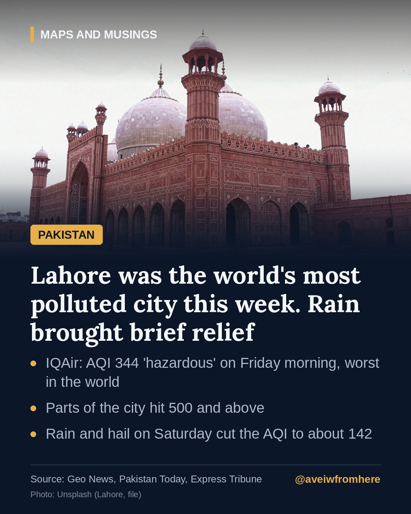

Lahore tops the world's pollution rankings as smog season begins
Lahore's air was rated 'hazardous' and the worst of any major city on Friday morning. Rain brought brief relief on Saturday, but the smog season has only just started.

Lahore spent much of last week at the top of the world's air pollution rankings, an early start to the smog season that now returns to Punjab every autumn.
The worst air of any major city
On the morning of Friday, 23 October, IQAir's live ranking placed Lahore first among major cities with an air quality index (AQI) of 344, in the "hazardous" band, Geo News reported. New Delhi was second at 244.
Readings inside the city were higher still. Geo News reported 535 in Iqbal Town, 497 on Bedian Road and 446 in Kahna. Pakistan Today reported readings of 500 in Shahdara, Kahna Nau and along Multan Road. Different platforms use different monitoring stations and update times, so their figures do not always match.
The main pollutant is PM2.5, fine particles small enough to penetrate deep into the lungs and enter the bloodstream. Geo News said concentrations were about 57 times the World Health Organization's annual guideline.
Where the smog comes from
Punjab officials blamed easterly winds carrying polluted air from across the border, according to Pakistan Today. Local sources matter too: cooler autumn air traps pollution close to the ground, where smoke from crop-residue burning mixes with traffic exhaust, industrial fumes and construction dust.
The provincial Environment Department deployed anti-smog guns, which spray fine water mist to settle dust, at dozens of locations in Lahore, prioritising the worst-hit areas.
Brief relief from the rain
Rain and hail fell across parts of Lahore on Saturday, including Gulberg, DHA, Model Town and Township, and the city's AQI was reported at about 142, the Express Tribune said. That is still unhealthy for sensitive groups, and the Met Office forecast mainly dry weather for most of Punjab on Sunday, which usually lets pollution build up again.
Protecting yourself
Doctors and officials advise:
- Wear an N95 mask outdoors.
- Keep children and older people indoors when readings are high.
- Avoid outdoor exercise and keep windows closed.
- Do not burn rubbish or crop waste.
The bigger picture
Smog has become a yearly crisis across Punjab and neighbouring north India, forcing school closures, disrupting transport and straining hospitals. Geo News noted research suggesting air pollution can cut life expectancy by more than five years in parts of South Asia. The coming weeks, typically the worst of the season, will test how much this year's measures can do.